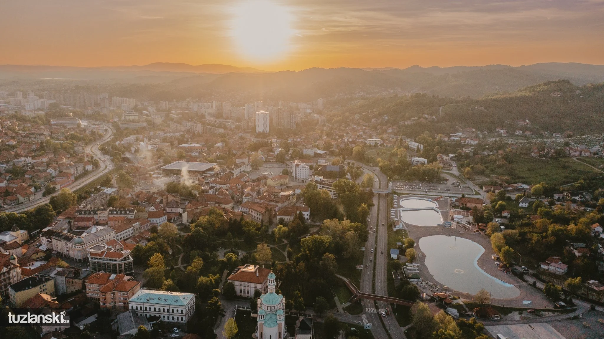

-
Sarajevo
Sarajevo, the largest city in Bosnia and Herzegovina, is a prominent cultural center in Southeastern Europe and serves as the political, financial, social, and cultural hub of the country, as well as a notable center of culture in the Balkans. Sarajevo is sometimes referred to as the 'Jerusalem of Europe' or "Jerusalem of the Balkans".
Located within the greater Sarajevo valley of Bosnia, it is surrounded by the Dinaric Alps and situated along the Miljacka River in the heart of the Balkans In 1885, it was the first city in Europe and the second city in the world to have a full-time electric tram network running through the city, following San Francisco...
-

Banja Luka
Banja Luka is the second largest city in Bosnia and Herzegovina by size, situated on the Vrbas River. It serves as the administrative, economic and cultural center of this part of Bosnian Krajina...
-
Zenica
Zenica, in Bosnia and Herzegovina, is an industrial hub with a rich history. It's famous for steel production and boasts a diverse cultural heritage with mosques, churches, museums...
-

Tuzla
Tuzla is the third-largest city in Bosnia and Herzegovina. The name Tuzla is the Ottoman Turkish word for salt mine, tuzla, and refers to the extensive salt deposits found underneath the city...
-
Mostar
In Bosnia and Herzegovina, Mostar brings history to life with its iconic "Stari Most" bridge spanning the Neretva River. Explore the old town, a blend of Ottoman and Austro-Hungarian influences...
-
Bihać
Bihac, in northwest Bosnia and Herzegovina, is a charming town by the Una River. Outdoor activities like rafting and hiking are popular, alongside Ottoman architecture and a medieval fortress, showcasing its history...
-

Bugojno
Bugojno, in central Bosnia and Herzegovina, has a rich history, scenic hills. Ancient settlements and Ottoman architecture reveal its past, while its blend of Bosniaks, Croats, and Serbs adds to its charm....
-

Brčko
Brčko, in northeastern BiH, blends ancient civilizations and diverse architecture along the Sava River. It's now a bustling economic hub with a rich multicultural past, offering a unique Balkan experience...
-

Bijeljina
Bijeljina, in northeastern Bosnia and Herzegovina, blends modernity with its Ottoman past along the Sava River. Visitors can explore markets, stroll by the river, and enjoy cultural events...
-
Bosnia and Herzegovina
Discover the enchanting tapestry of cities that Bosnia and Herzegovina has to offer, where every corner tells a story waiting to be explored. From the bustling markets of Sarajevo to the tranquil lakes of Trebinje, there's a world of adventure awaiting you. Immerse yourself in the rich culture, vibrant history, and breathtaking landscapes that make each city unique.
Click 'Explore' to embark on a journey through the heart and soul of Bosnia and Herzegovina, where every discovery is a treasure waiting to be found.